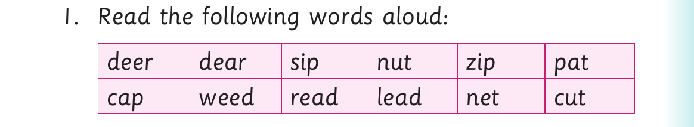

Identifying similar and different sounds - continued
Activity 2

1. Read the following words aloud: deer dear sip nut zip pat cap weed read lead net cut
2. Identify the words with similar vowel sounds in (1). 3. Identify the words with similar consonant sounds at the beginning in (1). 4. Identify the words with similar consonant sounds at the end in (1). 5. Identify the words with different consonant sounds at the beginning in (1).
Activity 3
Read the following sentences aloud: (a) Have you ever seen a deer, my dear? (b) His statement was clear. (c) Every car has a gear.
(d) You will hear them when they are near.
(e) I play with peers all the time.
(f) The thief entered through the rear window.
(g) People shed tears when they cry.